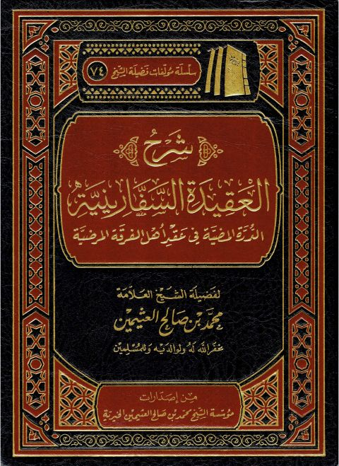

شرح العقيدة السفارينية، الدرة المضية في عقد أهل الفرقة المرضية
Authors: محمد بن صالح العثيمين
Publishers: مؤسسة الشيخ محمد بن صالح العثيمين الخيرية
Download Downloads need an internet connection.
- Published
- 1441هـ 2020م
- Country
- القصيم، السعودية
- Edition
- 5
- Volumes
- 1
- Pages
- 790
- Type
- كتاب
- Category
- العقيدة والمذاهب والأديان
Description
▫️ العنوان: شرح العقيدة السفارينية، الدرة المضية في عقد أهل الفرقة المرضية ▪️ المؤلف: #محمد_بن_صالح_العثيمين ▫️ الناشر: #مؤسسة_الشيخ_محمد_بن_صالح_العثيمين_الخيرية ▪️ تاريخ النشر: 1441هـ 2020م ▫️ بلد النشر: القصيم، #السعودية ▪️ الطبعة: 5 ▫️ عدد الأجزاء: 1 ▪️ الصفحات: 790 ▫️ نوع الوعاء: #كتاب ▪️ التصنيف الرئيسي: #العقيدة_والمذاهب_والأديان ۪